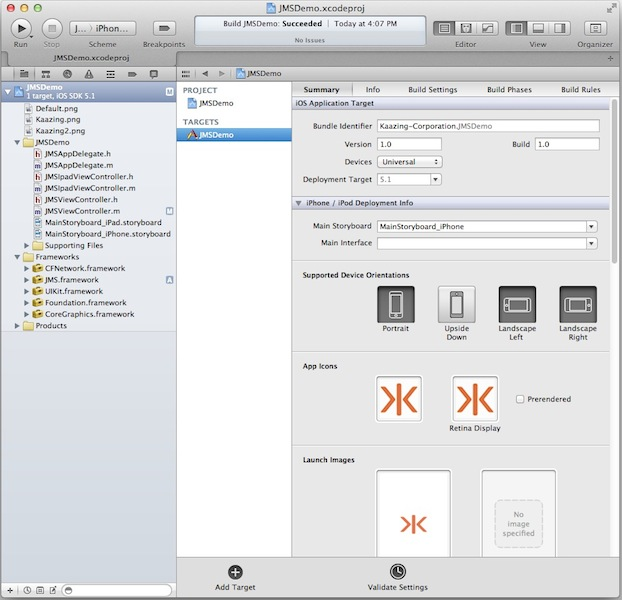
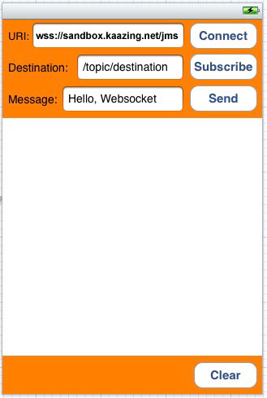
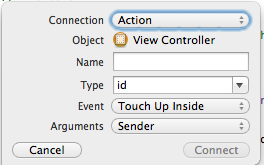
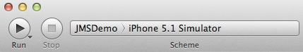
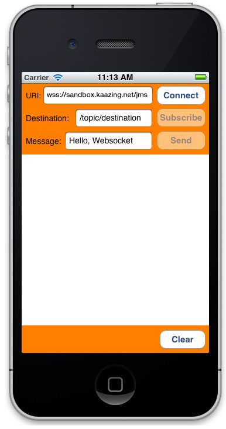

In this procedure, you will learn how to create an iOS JMS client using the Kaazing Enterprise Objective-C Client SDK. You will learn how to create an Xcode project and add the necessary frameworks in order to use the Objective-C JMS client API. You will learn how to implement the Objective-C JMS client API methods to enable your client to send and receive messages to a JMS-compliant message broker over WebSocket through a local or publicly available Gateway.
Note: For this tutorial, we describe how to use both a local and a publicly available Gateway and JMS broker. The public address is wss://demos.kaazing.com/jms. Locally, you can use any JMS-compliant message broker with the Gateway. By default, the Gateway is configured to connect to the broker on tcp://localhost:61613. You can configure the connect URL in the file GATEWAY_HOME/conf/gateway-config.xml. See About Integrating Kaazing Gateway and JMS-Compliant Message Brokers for more information.
In this procedure you will do the following:
Set up your development environment using the Gateway (optional) and Xcode 4.4 or later.
Review the components that will be used to create the Objective-C JMS client.
Create a new Xcode project.
Add the Kaazing Gateway Objective-C framework.
Add CFNetwork.framework to the project.
Add the -ObjC value to the Other Linker Flags build setting.
Build the interface for the client using MainStoryboard.storyboard.
Add the actions for the buttons to the view controller header file.
Add the StompConnectionListener to the JMSViewController.m implementation file.
Add the MessageListener to the JMSViewController.m implementation file.
Add the ExceptionListener to the JMSViewController.m implementation file.
Update the JMSViewController class in JMSViewController.m to use the StompConnectionListener, MessageListener, and ExceptionListener code.
Build and run the client in the iPhone Simulator.
For information about the Kaazing Gateway Objective-C JMS client library, see Objective-C JMS Client API.
If you are going to test your Android JMS client against a local Gateway and JMS broker, install the Gateway as described in Setting Up the Gateway and Clients.
Download and install Apple Xcode 4.4 or later (requires Mac OS X 10.7.4 or later). The Xcode bundle includes the iOS SDK.
Review the components that will be used to create the Objective-C client. A quick review of these components will give you an overview of how the client is constructed.
Component
Description
KGWebSocket.framework
Kaazing Gateway Objective-C WebSocket framework.
KMStompJMS.framework
Kaazing Gateway Objective-C JMS framework.
CFNetwork.framework
Core Foundation framework that provides a library of abstractions for network protocols. For more information on CFNetwork, see Introduction to CFNetwork Programming Guide.
MainStoryboard.storyboard
The storyboard for the user interface look and feel and the interactive controls.
JMSViewController.h
The header file that contains the target-action mechanism: how the user interface elements send an action message to an object that knows how to perform the corresponding action method (defined in JMSViewController.m).
In this file, user interface objects and outlet connections (connections between user interface objects and custom controller objects) are defined for the user interface controls. For more information, see Outlets.
JMSViewController.m
The implementation file (sometimes called a source file) where the architecture of the client is defined, including how the client responds to different events.
StompConnectionListener class
The JMS listener interface for connection events, including the instance method implementations.
MessageListener class
The JMS message listener interface, including the onMessage:() method.
ExceptionListener class
The JMS exception listener interface, including the onException:() method.
JMSViewController class
The fundamental view-management model for the client. This class defines how the client’s data and its visual appearance are linked. For more information, see UIViewController Class.
Launch Xcode.
Create a new Xcode project.
Click File, then New, and then Project.
Under iOS, click Application, and click Single View Application. Click Next. The project options page appears.
Figure: Options for the Single View Application project
Enter a name for your product in Product Name, such as JMSDemo, and a class prefix such as JMS in Class Prefix. Xcode uses the product name you entered to name your project and the client, and the class prefix to name the classes and files it generates for you.
In Company Identifier, enter the name of your company.
In Devices, make sure that iPhone is selected.
Make sure that the Use Storyboards and Use Automatic Reference Counting options are selected and that the Include Unit Tests option is unselected.
Click Next.
Specify a location for your project (leave the Source Control option unselected) and then click Create.
The new project is created along with the default files.

Figure: New Xcode Project
Next, add the Kaazing Gateway Objective-C framework to the project.
Navigate to the location of your downloaded Kaazing Enterprise Objective-C Client SDK.
Drag the KGWebSocket.framework folder from the mounted volume into the Frameworks folder in the Xcode project navigator.
In the Choose options for adding these files dialog that appears, enable the Copy items into destination group’s folder checkbox, select your project in Add to targets, and click Finish.
Repeat steps c and d for the KMStompJMS.framework.
Xcode adds the frameworks to the project navigator, updates the Framework Search Paths setting in Build Settings with the path to the frameworks, and updates the Link Binary With Libraries settings in Build Phases automatically.
Note: You can also choose to add the KGWebSocket.framework and KMStompJMS.framework files into your local /Library/Frameworks/ folder or a network share before adding them to your project. This is a common practice for managing frameworks.
Add CFNetwork.framework to the project. CFNetwork is a framework in the iOS Core Services framework that provides a library of abstractions for network protocols.
In the project navigator, select the target to which you want to add a library or framework. In this example, JMSDemo.
Click Build Phases at the top of the project editor.
Open the Link Binary With Libraries section.
Click the Add (+) button to add a library or framework.
Enter CFNetwork.framework in the search field, select CFNetwork.framework in the results, and click Add.
The CFNetwork.framework is now listed in the Frameworks folder in the project navigator.
Add the -ObjC value to the Other Linker Flags build setting because the Kaazing Gateway Objective-C API code you add links against an Objective-C static library that contains categories. You must add this value to prevent a runtime exception of "selector not recognized". For more information, see Building Objective-C static libraries with categories.
In the project navigator, select the target to which you want to add a library or framework. In this example, JMSDemo.
Click the Build Settings tab and scroll down to the Linking section.
In Other Linker Flags, add the value -ObjC.
Apply the -fobjc-arc-exceptions flag. By default in Objective-C, ARC is not exception-safe for normal releases. If the -fobjc-arc-exceptions flag is not specified, then the lifetime of __strong variables are not ended when their scopes are abnormally terminated by an exception. To enable exceptions, on the Build Settings tab, under Apple LLVM compiler 4.2 Language, expand Other C Flags, click the + button next to Release and add the flag -fobjc-arc-exceptions.
Build the interface for the client using MainStoryboard.storyboard and the View Controller.
Click MainStoryboard.storyboard in the project navigator. A blank scene appears.
Expand View Controller in the editor area and click View.
Click the Utility view to display the Utility area.
Show the Object Library, and choose Controls from the pop-up menu.
Drag the following controls into the scene, and give them the values listed in the following table. You might want to add a background color to the scene in order to display controls clearly.
Control
Purpose
Value
Label
URI text label
URI:
Text Field
Field where users enter a WebSocket address
wss://demos.kaazing.com/jms
Label
Destination label
Destination:
Button
Connect button
Connect
Button
Subscribe button
Subscribe
Button
Send button
Send
Text Field
Field where users enter the JMS destination
/topic/destination
Label
Message label
Message:
Text Field
Field where users enter a message
Hello, WebSocket
Text View
Area where the connection and subscription state is displayed, and where sent and received messages are displayed
No value
Button
Clear button that clears previous connection and message info
Clear
When you are finished, the scene should look like the following:

Figure: Completed View Controller Scene
Add the actions for the buttons to the view controller header file. In our example, the file is named JMSViewController.h.
Modify the JMSViewController class as follows:
#import <UIKit/UIKit.h>
// Declare the JMSViewController class and add the log and updateUI methods
@interface JMSViewController : UIViewController<UITextFieldDelegate>
- (void) log:(NSString *)str;
- (void) updateUI:(BOOL)connectStatus;
- (void) cleanup;
Control-drag the UI controls into the JMSViewController class extension in JMSViewController.h to create actions and outlet connections (an outlet describes a connection between two objects). Configure the actions and outlet connections so that JMSViewController.h appears as follows:
When you Control-drag the UI controls in the JMSViewController, the popover control appears:

Figure: The Xcode popover control
For action method declarations (IBAction), choose Action in the the Connection drop-down. For outlet connections (IBOutlet), choose Outlet in the Connection drop-down. This is a common Xcode procedure. If you are unfamiliar with this procedure, see A Beginner’s Guide to Storyboard.
Notes:
For all of the buttons, ensure that Touch Up Inside is selected in the Sent Events section of the Connections Inspector. Xcode will likely configure this automatically.
While you can paste the above code into your header file, if you control-drag (press and hold the Control key while you drag the button to the implementation file in the assistant editor pane) the UI elements into the code from the scene and use the popover control to specify the outlet connections you can ensure that you have all the settings correct. This is a common Xcode procedure. If you are unfamiliar with this procedure, see A Beginner’s Guide to Storyboard.
When you add the action methods, corresponding stub methods are added to the JMSViewController.m implementation file automatically. You will update these methods in JMSViewController.m with the Kaazing Gateway Objective-C API in later steps.
Some iOS clients define the interface in the implementation file instead of the header file. The client in this procedure defines the interface in the header file and the implementation methods in the implementation file.
Set the delegate for the text fields. In the view, Control-drag each text field to the yellow sphere in the scene dock (the view controller object). Select delegate in the Outlets section of the panel that appears. For more information, see A Beginner’s Guide to Storyboard.
Add the files JMSAppDelegate.h and JMSAppDelegate.m to the project.
To add these files, drag them from the Kaazing iOS tutorial you downloaded. The Kaazing iOS tutorial is located at https://github.com/kaazing/ios.client.tutorials. Once you have downloaded the tutorial, the files are located in ios.client.tutorials/jms/src/JMSDemo. Drag these files to the JMSDemo project folder in Xcode.
In Xcode, click JMSViewController.m. You are going to modify this file to manage JMS communication to the JMS broker via the Gateway.
Replace the code in JMSViewController.m with the following code sample. The new code includes the following changes:
Add the import directive and class declaration below the import statement for JMSViewController.h (#import "JMSViewController.h") (starts at line 1).
Declare the StompConnectionListener class (starts at line 72).
Declare the MessageListener class after the StompConnectionListener class (starts at line 111).
Declare the ExceptionListener class after the MessageListener class (starts at line 174).
Replace the JMSViewController class in JMSViewController.m with the JMSViewController class in the code sample to use the StompConectionListener, MessageListener, and ExceptionListener code (starts at line 201).
#import "JMSViewController.h"
#import "JMSAppDelegate.h"
#import <KMStompJMS/KMStompJMS.h>
#import <KGWebSocket/WebSocket.h>
@class JMSViewController;
// --------------- LoginHandler Implementation ---------------
@interface DemoLoginHandler : KGLoginHandler
@end
@implementation DemoLoginHandler {
int _buttonIndex;
NSString *_username;
NSString *_password;
UIAlertView *_alertView;
}
-(void) dealloc {
}
- (id) init {
NSLog(@"[DemoLoginHandler init]");
self = [super init];
return self;
}
-(NSURLCredential *) credentials {
_buttonIndex = -1;
dispatch_async(dispatch_get_main_queue(), ^{
[self popupLogin];
});
// Wait for click
while (_buttonIndex < 0) {
[NSThread sleepForTimeInterval:.2];
}
// Clicked the Submit button
if (_buttonIndex != 0) {
return [[NSURLCredential alloc] initWithUser:_username password:_password persistence:NSURLCredentialPersistenceNone];
} else {
return nil;
}
}
- (void) alertView:(UIAlertView *)alertView clickedButtonAtIndex:(NSInteger)buttonIndex {
_username = [_alertView textFieldAtIndex:0].text;
_password = [_alertView textFieldAtIndex:1].text;
_buttonIndex = buttonIndex;
}
- (void) popupLogin {
_buttonIndex = -1;
_alertView = [[UIAlertView alloc] initWithTitle:@"Please Login:" message:nil
delegate:self
cancelButtonTitle:@"Cancel"
otherButtonTitles:@"OK", nil];
_alertView.alertViewStyle = UIAlertViewStyleLoginAndPasswordInput;
// Show alert on screen.
[_alertView show];
}
@end
// --------------- StompConnectionListener Implementation ---------------
@interface JMSConnectionListener : NSObject<KMStompConnectionListener> {
JMSViewController *_controller;
}
@end
@implementation JMSConnectionListener
- (id) initWithController:(JMSViewController *)controller {
self = [super init];
if (self) {
_controller = controller;
}
return self;
}
- (void) onConnect:(KMConnection *)connection {
[_controller log:@"CONNECTED"];
[_controller updateUI:YES];
}
- (void) onStart:(KMConnection *)connection {
[_controller log:@"CONNECTION STARTED"];
}
- (void) onStop:(KMConnection *)connection {
[_controller log:@"STOPPED"];
}
- (void) onClose:(KMConnection *)connection {
[_controller log:@"DISCONNECTED\n"];
[((JMSViewController *)_controller) cleanup];
[_controller updateUI:NO];
}
@end
// -------------------- MessageListener Implementation -----------------
@interface JMSMessageListener : NSObject<KMMessageListener>
@end
@implementation JMSMessageListener {
JMSViewController *_controller;
}
- (id) initWithController:(JMSViewController *)controller {
self = [super init];
if (self) {
_controller = controller;
}
return self;
}
- (NSString *) typeFromObject:(NSObject *)value {
if (value == nil) {
return @"nil";
} else if ([value isKindOfClass:[NSString class]]) {
return @"NSString";
} else if ([value isKindOfClass:[NSNumber class]]) {
return @"NSNumber";
} else if ([value isKindOfClass:[NSData class]]) {
return @"NSData";
} else if ([value isKindOfClass:[NSNull class]]) {
return @"NSNull";
} else {
return @"UNKNOWN TYPE";
}
}
- (void) onMessage:(KMMessage *)message {
if ([message isKindOfClass:[KMTextMessage class]]) {
KMTextMessage *textMessage = (KMTextMessage *)message;
[_controller log:[NSString stringWithFormat:@"RECEIVED KMTextMessage: %@", [textMessage text]]];
} else if ([message isKindOfClass:[KMBytesMessage class]]) {
KMBytesMessage *bytesMessage = (KMBytesMessage *)message;
NSString *utf8String = [bytesMessage readUTF];
[_controller log:[NSString stringWithFormat:@"RECEIVED KMBytesMessage: %@", utf8String]];
} else if ([message isKindOfClass:[KMMapMessage class]]) {
KMMapMessage *mapMessage = (KMMapMessage *)message;
[_controller log:[NSString stringWithFormat:@"RECEIVED KMMapMessage:"]];
int count = 0;
for (NSString *key in [mapMessage mapNames]) {
id value = [mapMessage getObject:key];
NSString *type = [self typeFromObject:value];
[_controller log:[NSString stringWithFormat:@" %@: %@ (%@)", key, value, type]];
count++;
}
[_controller log:[NSString stringWithFormat:@"%d entries", count]];
} else {
[_controller log:@"RECEIVED UNKNOWN MESSAGE"];
}
}
@end
// -------------------- ExceptionListener Implementation -----------------
@interface JMSExceptionListener : NSObject<KMExceptionListener>
@end
@implementation JMSExceptionListener {
JMSViewController *_controller;
}
- (id) initWithController:(JMSViewController *)controller {
self = [super init];
if (self) {
_controller = controller;
}
return self;
}
- (void) onException:(KMJMSException *)exception {
NSString *msg = [exception reason];
[_controller log:[NSString stringWithFormat:@"EXCEPTION: %@", msg]];
if ([exception isKindOfClass:[KMConnectionDisconnectedException class]]) {
[((JMSViewController *)_controller) cleanup];
}
}
@end
// -------------------- JMSViewController Implementation ---------------
@interface JMSViewController ()
-(KMDestination*) createDestination:(NSString*)destinationName;
@end
@implementation JMSViewController
@synthesize connectDisconnectButton;
@synthesize sendButton;
@synthesize subscribeButton;
@synthesize clearButton;
@synthesize locationField;
@synthesize destinationField;
@synthesize messageField;
@synthesize logView;
bool connected = NO;
KMStompConnectionFactory *factory = nil;
KMConnection *conn = nil;
KMSession *session = nil;
KMMessageProducer *producer = nil;
KMMessageConsumer *consumer = nil;
- (void) viewDidLoad {
subscribeButton.enabled = NO;
subscribeButton.alpha = 0.5f;
sendButton.enabled = NO;
sendButton.alpha = 0.5f;
[[NSNotificationCenter defaultCenter] addObserver:self
selector:@selector(suspendOrResume:)
name:@"suspendOrResume"
object:nil];
[super viewDidLoad];
}
- (void) viewDidUnload {
[self setLocationField:nil];
[self setDestinationField:nil];
[self setMessageField:nil];
[self setLogView:nil];
[self setConnectDisconnectButton:nil];
[self setSendButton:nil];
[self setSubscribeButton:nil];
[self setClearButton:nil];
subscribeButton.enabled = NO;
subscribeButton.alpha = 0.5f;
sendButton.enabled = NO;
sendButton.alpha = 0.5f;
[super viewDidUnload];
// Release any retained subviews of the main view.
}
#pragma mark <UIViewController Methods>
- (BOOL) shouldAutorotateToInterfaceOrientation:(UIInterfaceOrientation)interfaceOrientation {
if ([[UIDevice currentDevice] userInterfaceIdiom] == UIUserInterfaceIdiomPhone) {
return (interfaceOrientation != UIInterfaceOrientationPortraitUpsideDown);
} else {
return YES;
}
}
#pragma mark <UITextFieldDelegate Method>
- (BOOL) textFieldShouldReturn:(UITextField *)theTextField {
if ((theTextField == self.locationField) ||
(theTextField == self.destinationField) ||
(theTextField == self.messageField)) {
[theTextField resignFirstResponder];
}
return YES;
}
#pragma mark <JMSViewController Methods>
- (IBAction) connectOrDisconnect:(id)sender {
// Cache values from the UI widgets in the main thread itself to avoid warnings/errors
// related to UIKit invoked from secodary thread.
NSString *location = [locationField text];
dispatch_async(dispatch_get_global_queue(DISPATCH_QUEUE_PRIORITY_DEFAULT, 0), ^{
if (!connected) {
NSURL *url = [[NSURL alloc] initWithString:location];
KMStompConnectionProperties *props = [[KMStompConnectionProperties alloc] init];
props->_connectionTimeout = 5000;
@try {
factory = [[KMStompConnectionFactory alloc] initWithUrl:url properties:props];
KGWebSocketFactory *webSocketFactory = [factory webSocketFactory];
KGChallengeHandler *challengeHandler = [self createBasicChallengeHandler];
JMSAppDelegate *delegate = [[UIApplication sharedApplication] delegate];
NSData *devToken = [delegate deviceToken];
[webSocketFactory setDefaultChallengeHandler:challengeHandler];
[self log:@"CONNECTING"];
id<KMStompConnectionListener> listener = [[JMSConnectionListener alloc] initWithController:self];
conn = [factory createConnectionWithListener:listener];
[conn setExceptionListener:[[JMSExceptionListener alloc] initWithController:self]];
[conn start];
session = (KMSession *)[conn createSession:KMSessionAutoAcknowledge transacted:NO];
}
@catch (NSException *ex) {
[self log:[NSString stringWithFormat:@"EXCEPTION: %@", [ex reason]]];
NSLog(@"Exception: %@", [ex reason]);
if (session != nil) {
[session close];
}
if (conn != nil) {
[conn close];
}
session = nil;
conn = nil;
factory = nil;
}
} else {
connected = NO;
[self log:@"CLOSING"];
[session close];
[conn close];
}
});
}
- (IBAction) subscribe:(id)sender {
// Cache values from the UI widgets in the main thread itself to avoid warnings/errors
// related to UIKit invoked from secondary thread.
NSString *destinationName = [destinationField text];
// Subscribing can be a blocking operation, so perform it in the background.
dispatch_async(dispatch_get_global_queue(DISPATCH_QUEUE_PRIORITY_DEFAULT, 0), ^{
@try {
// Create a destination.
KMDestination *dest = [self createDestination:destinationName];
if (dest == nil) {
return;
}
// Create a consumer and attach a listener.
consumer = [session createConsumer:dest];
[consumer setMessageListener:[[JMSMessageListener alloc] initWithController:self]];
// Update the UI. These calls will schedule themselves in the main queue.
[self log:[NSString stringWithFormat:@"SUBSCRIBED TO: %@", destinationName]];
[self disableSubscribeButton];
}
@catch (NSException *exception) {
NSString *msg = [exception reason];
[self log:[NSString stringWithFormat:@"EXCEPTION: %@", msg]];
if (consumer != nil) {
[consumer close];
}
consumer = nil;
}
});
}
- (IBAction) send:(id)sender {
// Cache values from the UI widgets in the main thread itself to avoid warnings/errors
// related to UIKit invoked from secondary thread.
NSString *destinationName = [destinationField text];
NSString *messageText = [messageField text];
// Sending a message is a blocking operation, so we do not want to
// do that in the UI thread. Instead, we want to do it in the background.
dispatch_async(dispatch_get_global_queue(DISPATCH_QUEUE_PRIORITY_DEFAULT, 0), ^{
@try {
// Create a destination.
KMDestination *dest = [self createDestination:destinationName];
if (dest == nil) {
return;
}
// Create a producer and message.
producer = [session createProducer:dest];
KMTextMessage *message = [session createTextMessage];
// Set the message text and send it away.
[message setText:messageText];
[producer send:message];
// Update the UI. This call will schedule itself in the main queue.
[self log:[NSString stringWithFormat:@"MESSAGE SENT TO %@: %@", destinationName, messageText]];
}
@catch (NSException *exception) {
NSString *msg = [exception reason];
[self log:[NSString stringWithFormat:@"EXCEPTION: %@", msg]];
if (producer != nil) {
[producer close];
}
producer = nil;
}
});
}
- (IBAction) clear:(id)sender {
dispatch_async(dispatch_get_main_queue(), ^{
[logView setText:@""];
});
}
#pragma mark<Private Methods>
- (KGChallengeHandler *) createBasicChallengeHandler {
// Set up ChallengeHandlers to handle authentication challenge.
KGLoginHandler *loginHandler = [[DemoLoginHandler alloc] init];
KGBasicChallengeHandler *challengeHandler = [KGBasicChallengeHandler create];
[challengeHandler setLoginHandler:loginHandler];
return challengeHandler;
}
// Create a KMTopic or KMQueue depending on the text prefix inside the destination field.
- (KMDestination *) createDestination:(NSString*)destinationName {
if ([destinationName hasPrefix:@"/topic/"]) {
return [session createTopic:destinationName];
}
else if ([destinationName hasPrefix:@"/queue/"]) {
return [session createQueue:destinationName];
}
// Make sure that the error dialog is shown in the main UI thread.
dispatch_async(dispatch_get_main_queue(), ^{
UIAlertView *badPrefixAlert = [[UIAlertView alloc] initWithTitle:@"Invalid destination"
message:@"Destination must begin with /topic/ or /queue/"
delegate:nil
cancelButtonTitle:@"OK"
otherButtonTitles:nil];
[badPrefixAlert show];
});
return nil;
}
- (void) cleanup {
if (producer != nil) {
[producer close];
}
if (consumer != nil) {
[consumer close];
}
if (session != nil) {
[session close];
}
if (conn != nil) {
[conn close];
}
producer = nil;
session = nil;
conn = nil;
factory = nil;
}
- (void) log:(NSString *)str {
dispatch_async(dispatch_get_main_queue(), ^{
NSString *text = str;
NSString *log = [logView text];
if ((log != nil) && ([log length] > 0)) {
text = [NSString stringWithFormat:@"%@\n%@", [logView text], str];
}
// remove old text if text field is too large
if ([[logView text] length] > 5000) {
text = [text substringFromIndex:3000];
}
[logView setText:text];
[logView scrollRangeToVisible:NSMakeRange([logView.text length], 0)];
});
}
- (void) disableSubscribeButton {
dispatch_async(dispatch_get_main_queue(), ^{
subscribeButton.enabled = NO;
subscribeButton.alpha = 0.5f;
});
}
- (void) suspendOrResume:(NSNotification *)notification {
NSDictionary *dict = [notification userInfo];
NSString *str = (NSString *) [dict valueForKey:@"CONNECTION_STATE"];
JMSAppDelegate *delegate = [[UIApplication sharedApplication] delegate];
NSData *devToken = [delegate deviceToken];
if ([str isEqualToString:@"resume"]) {
@try {
if (devToken == nil) {
// Application switched from background to foreground. Start the connection
// if it was earlier connected.
if (conn != nil) {
[conn start];
}
return;
}
NSString *location = [locationField text];
NSURL *url = [[NSURL alloc] initWithString:location];
KMStompConnectionFactory *factory = [[KMStompConnectionFactory alloc] initWithUrl:url];
KGWebSocketFactory *webSocketFactory = [factory webSocketFactory];
KGChallengeHandler *challengeHandler = [self createBasicChallengeHandler];
[webSocketFactory setDefaultChallengeHandler:challengeHandler];
NSString *bundleId = [[NSBundle mainBundle] bundleIdentifier];
[webSocketFactory setDefaultEnabledExtensions:enabledExtensions];
[self log:@"CONNECTING"];
id<KMStompConnectionListener> listener = [[JMSConnectionListener alloc] initWithController:self];
conn = [factory createConnectionWithListener:listener];
[conn setExceptionListener:[[JMSExceptionListener alloc] initWithController:self]];
[conn start];
session = (KMSession *)[conn createSession:KMSessionAutoAcknowledge transacted:NO];
// Create a destination.
NSString *destinationName = [destinationField text];
KMDestination *dest = [self createDestination:destinationName];
if (dest == nil) {
return;
}
// Create a consumer and attach a listener.
consumer = [session createConsumer:dest];
[consumer setMessageListener:[[JMSMessageListener alloc] initWithController:self]];
// Update the UI. These calls will schedule themselves in the main queue.
[self log:[NSString stringWithFormat:@"SUBSCRIBED TO: %@", destinationName]];
connected = YES;
[self updateUI:YES];
[self disableSubscribeButton];
}
@catch (NSException *ex) {
[self log:[NSString stringWithFormat:@"EXCEPTION: %@", [ex reason]]];
NSLog(@"Exception: %@", [ex reason]);
if (consumer != nil) {
[consumer close];
}
if (session != nil) {
[session close];
}
if (conn != nil) {
[conn close];
}
consumer = nil;
session = nil;
conn = nil;
}
}
else { // suspend
@try {
if (devToken == nil) {
// Application switched from foreground to background. Stop the connection
// if it was connected.
if (conn != nil) {
[conn stop];
}
return;
}
}
@catch (NSException *ex) {
[self log:[NSString stringWithFormat:@"EXCEPTION: %@", [ex reason]]];
NSLog(@"Exception: %@", [ex reason]);
}
}
}
- (void) updateUI:(BOOL)connectStatus {
dispatch_async(dispatch_get_main_queue(), ^{
if (connectStatus) {
[connectDisconnectButton setTitle:@"Disconnect" forState:UIControlStateNormal];
connected = YES;
subscribeButton.enabled = YES;
subscribeButton.alpha = 1.0f;
sendButton.enabled = YES;
sendButton.alpha = 1.0f;
} else {
[connectDisconnectButton setTitle:@"Connect" forState:UIControlStateNormal];
connected = NO;
subscribeButton.enabled = NO;
subscribeButton.alpha = 0.5f;
sendButton.enabled = NO;
sendButton.alpha = 0.5f;
}
});
}
@end
Build and run the client in the iPhone Simulator.
In the Scheme menu, select iPhone 5.1 Simulator (you might have a more recent version such as iPhone 6.1).

Figure: Scheme using iPhone 5.1 Simulator
Click Run.
The iPhone Simulator displays the client.

Figure: Your JMS Demo client on the iPhone Simulator
In URI, enter wss://demos.kaazing.com/jms.
Click Connect. The client connects to the JMS service via a publicly available instance of the Gateway.
Click Subscribe. You are now subscribed to the topic.
Click Send. The message is sent and the received instantly because you are a subscriber.
Click Disconnect to end the connection.
Migrate iOS Applications to Kaazing Objective-C Client 4.x
If you wish to migrate your Kaazing Gateway 3.3-3.5 iOS clients to Kaazing Objective-C Client 4.x and use its new library, do the following:
Add the new KGWebSocket.framework in Kaazing Objective-C Client 4.x to your client, as described in the above procedure.
Add the new KMStompJMS.framework in Kaazing Objective-C Client 4.x to your client, as described in the above procedure. This has replaced the KMStompJMS.framework from 3.3-3.5.
Change any KMStompJMS references to both KGWebSocket and KMStompJMS, such as in the import statements in JMSViewController.m above (#import <KGWebSocket/WebSocket.h>, #import <KMStompJMS/KMStompJMS.h>). You do not need to change any instances of KMStompConnectionFactory.
Modify challenge handlers. In Kaazing Objective-C Client 4.x, the KGChallengeHandlers class from 3.3-3.5 was replaced with by the KGChallengeHandler modifier of the WebSocketFactory class. The KGChallengeHandler modifier is used during authentication for connections and subsequent revalidation that occurs at regular intervals.
Kaazing Gateway 3.3-3.5:
// Set up ChallengeHandlers to handle authentication challenge.
KGLoginHandler *loginHandler = [[DemoLoginHandler alloc] init];
KGBasicChallengeHandler *challengeHandler = [KGChallengeHandlers load:@"KGBasicChallengeHandler"];
[challengeHandler setLoginHandler:loginHandler];
[KGChallengeHandlers setDefault:challengeHandler];
Kaazing Objective-C Client 4.x:
- (KGChallengeHandler *) createBasicChallengeHandler {
// Set up ChallengeHandlers to handle authentication challenge.
KGLoginHandler *loginHandler = [[DemoLoginHandler alloc] init];
KGBasicChallengeHandler *challengeHandler = [KGBasicChallengeHandler create];
[challengeHandler setLoginHandler:loginHandler];
return challengeHandler;
}
Note: Currently, the Gateway does not support durable subscribers with Apache ActiveMQ. You may use durable subscribers with TIBCO EMS or Informatica UM. For more information, see Durable Subscribers.
If your JMS client needs to receive all of the messages published on a topic, including the ones published while the subscriber is inactive because it is not being used or has lost connections (which is common when using mobile devices), create a durable KMTopicSubscriber using the createDurableSubscriber method on the KMSession object.
To unsubscribe from a durable topic, use the - unsubscribe method of the KMSession object.
The JMS provider retains a separate record of each durable subscription and ensures that all messages from the topic's publishers are retained until they are acknowledged by each durable subscriber or they have expired. Whether messages have been acknowledged is tracked separately for each durable subscriber, and each durable subscriber is identified by the combination of its name and the clientID (if any) set on the Connection. Ensure your application confirms that the clientID (if used) is unique to the user or device, or, if it does not use clientID's, ensure that the durable name is unique to the user or device.
Note: The following code example is not intended to be integrated into the iOS JMS client created earlier in this topic. The following example is a separate iOS JMS client that demonstrates durable subscribers.
Example
The following code shows the interface and implementation of the JMSDurableSubscriberMessageListener API.
The following snippet, which is not part of the preceding class, creates the connection and the durable subscription. It provides examples of creating a durable subscription with and without a message selector.
When using message selectors, the same string value is used by methods sending or receiving messages with a message selector. You can see that the receiveMessageUsingDurableSubscriber method above uses a message selector string (line 26). A send method should have a condition such as:
if (withMessageSelector) {
[textMsg setStringProperty:@"symbol" value:@"KZNG"];
}
Durable subscriptions do not require message selectors. Nor are message selectors limited to durable subscriptions. The preceding example simply shows a common combination of durable subscriptions and message selectors.
Convert Your Objective-C (iOS) Client to a 64-Bit Runtime Environment
iPhone 5s, iPad Air and iPad mini (2nd generation) both run on a completely new processor architecture: arm64. arm64 is the standard, 64-Bit architecture in Xcode 5.0.1. You can use Xcode 5.0.1 to update your Objective-C (iOS) client to support arm64. For more information, see Converting Your App to a 64-Bit Binary.
To update your Objective-C (iOS) client to support arm64:
Install Xcode 5.0.1 or later from the Mac App Store.
Open your Objective-C (iOS) client project. Xcode prompts you to modernize your project. Modernizing the project adds new warnings and errors that are important when compiling your app for 64-bit.
Update your project settings to support iOS 5.1.1 or later. You cannot build a 64-bit project if it targets an iOS version earlier than iOS 5.1. Change the Architectures build setting in your project to Standard Architectures (including 64-bit). Set the Deployment Target to 7.1. For more information, see Converting Your App to a 64-Bit Binary.
Clients built using Kaazing Gateway 3.x libraries will work against Kaazing Gateway 4.x. If you wish to upgrade your 3.x client to the 4.x libraries, please note that the 3.x clients used a single Stomp JMS library and 4.x clients include and use separate WebSocket and Stomp JMS libraries. Update your client library file and code references to include both the WebSocket and Stomp JMS libraries, as described in the 4.x documentation.
TemporaryTopic and TemporaryQueue objects are destroyed when the client loses its connection to the Gateway, or when the JMS-compliant message broker loses its connection to the Gateway. To address this, monitor the client's exception listener to handle recovery for your application. Once the connection is re-established, recreate TemporaryTopic and TemporaryQueue. ConnectionDroppedException and ConnectionInterruptedException are delivered to the connection's exception listener via onException, indicating that messages in flight might be lost, depending on message delivery options. ConnectionRestoredException is delivered to indicate that the connection through to the JMS-compliant message broker has been re-established. TemporaryTopic and TemporaryQueue should be recreated at that time to resume operations.